2022年第1周 1月4至1月7日个股600031预测
公历时间：2022年1月2日15时31分
干 支：辛丑年 庚子月 乙卯日 甲申时
旬 空：辰巳 辰巳 子丑 午未
神 煞：驿马─巳 桃花─子 日禄─卯 贵人─子，申
离宫：天水讼（游魂）
六神 伏 神 【本 卦】
玄武 ▄▄▄▄▄ 子孙壬戌土
白虎 ▄▄▄▄▄ 妻财壬申金
螣蛇 ▄▄▄▄▄ 兄弟壬午火 世
勾陈 官鬼己亥水 ▄▄ ▄▄ 兄弟戊午火
朱雀 ▄▄▄▄▄ 子孙戊辰土
青龙 ▄▄ ▄▄ 父母戊寅木 应
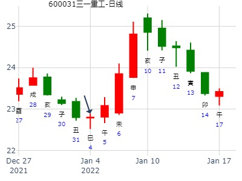
占事：试测002049紫光国微2021.1.11己未一-1.15癸亥五哪日底？+
公历起卦时间：2021年1月10日19时24分 (电脑自动)
干支：庚子年 己丑月 戊午日 壬戌时 （日空：子丑）
神煞：驿马－申 桃花－卯 日禄－巳 贵人－丑，未
离宫：天水讼 (游魂)
六神 伏神 本 卦
朱雀 子孙壬戌土 ▅▅▅▅▅
青龙 妻财壬申金 ▅▅▅▅▅
玄武 兄弟壬午火 ▅▅▅▅▅ 世
白虎 官鬼己亥水 兄弟戊午火 ▅▅ ▅▅
螣蛇 子孙戊辰土 ▅▅▅▅▅
勾陈 父母戊寅木 ▅▅ ▅▅ 应
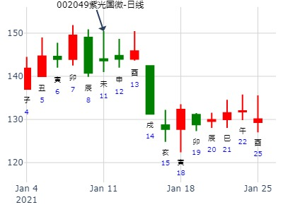
占事: 300534陇神戎发在2018年走势
时间: 2018-01-25
干支: 丁酉年癸丑月丁巳日辛亥时 (旬空: 子丑 )
讼静卦
(游魂)
六神 伏神 本 卦
青龙 ▅▅▅▅▅ 子孙戌土
玄武 ▅▅▅▅▅ 妻财申金
白虎 ▅▅▅▅▅ 兄弟午火 世
腾蛇 官鬼亥水▅▅ ▅▅ 兄弟午火
勾陈 ▅▅▅▅▅ 子孙辰土
朱雀 ▅▅ ▅▅ 父母寅木 应
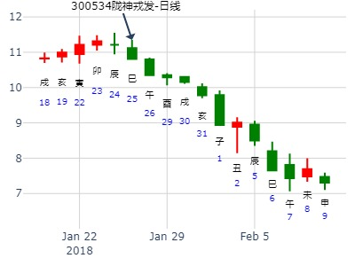
占事：一周大盘
公历起卦时间：2023年1月30日10时17分 (在线摇卦)
立春：2023年02月04日10时47分
干支：壬寅年 癸丑月 戊子日 丁巳时 （日空：午未）
离宫：天水讼 (游魂)
六神 伏神 本 卦
朱雀 子孙壬戌土 ▅▅▅▅▅
青龙 妻财壬申金 ▅▅▅▅▅
玄武 兄弟壬午火 ▅▅▅▅▅ 世
白虎 官鬼己亥水 兄弟戊午火 ▅▅ ▅▅
螣蛇 子孙戊辰土 ▅▅▅▅▅
勾陈 父母戊寅木 ▅▅ ▅▅ 应
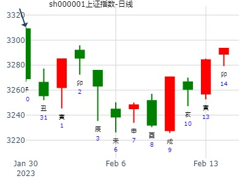
2023-02-02
占事：一周大盘走势
干支：壬寅年 癸丑月 戊子日 丁巳时 （日空：午未）
离宫：天水讼 (游魂)
六神 伏神 本 卦
朱雀 子孙壬戌土 ▅▅▅▅▅
青龙 妻财壬申金 ▅▅▅▅▅
玄武 兄弟壬午火 ▅▅▅▅▅ 世
白虎 官鬼己亥水 兄弟戊午火 ▅▅ ▅▅
螣蛇 子孙戊辰土 ▅▅▅▅▅
勾陈 父母戊寅木 ▅▅ ▅▅ 应
子日巳时涨，这是已知条件。
巳时，亥暗动（当日子日，不是子日则不算暗动），必涨，寅卯时大盘是跌的。
确认多空，多方是金水还是水木？
应该是水木。巳时亥水暗动生寅木，临寅卯时段，本身旺，暗动再生，过旺则跌。
由此可见，本周水木日是涨的，土日是跌的。
根据卦，结合已知情况，可以更准确的确定多空，断准走势。
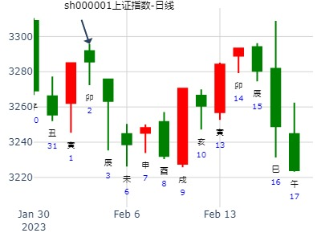
试测上证2021.2.5收盘个位数是几+D？
公历起卦时间：2021年2月4日22时41分 (电脑自动)
干支：辛丑年 庚寅月 癸未日 癸亥时 （日空：申酉）
神煞：驿马－巳 桃花－子 日禄－子 贵人－卯，巳
离宫：天水讼 (游魂)
六神 伏神 本 卦
白虎 子孙壬戌土 ▅▅▅▅▅
螣蛇 妻财壬申金 ▅▅▅▅▅
勾陈 兄弟壬午火 ▅▅▅▅▅ 世
朱雀 官鬼己亥水 兄弟戊午火 ▅▅ ▅▅
青龙 子孙戊辰土 ▅▅▅▅▅
玄武 父母戊寅木 ▅▅ ▅▅ 应
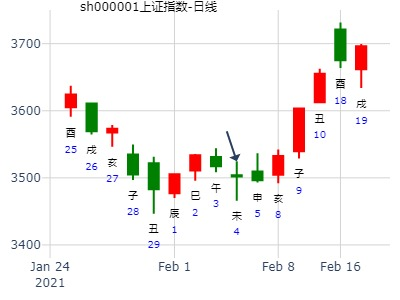
占事：2020年3月大盘涨跌？
公历起卦时间：2020年2月28日15时7分 (手工指定)
干支：庚子年 戊寅月 辛丑日 丙申时 （日空：辰巳）
神煞：驿马－亥 桃花－午 日禄－酉 贵人－寅，午
离宫：天水讼 (游魂)
六神 伏神 本 卦
螣蛇 子孙壬戌土 ▅▅▅▅▅
勾陈 妻财壬申金 ▅▅▅▅▅
朱雀 兄弟壬午火 ▅▅▅▅▅ 世
青龙 官鬼己亥水 兄弟戊午火 ▅▅ ▅▅
玄武 子孙戊辰土 ▅▅▅▅▅
白虎 父母戊寅木 ▅▅ ▅▅ 应
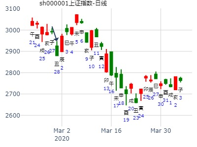
安圆圆21:47:17
占事：600547山东黄金从明天到下周五的走势
公历起卦时间：2015年3月19日21时40分 (手工指定)
干支：乙未年 己卯月 甲午日 乙亥时 （日空：辰巳）
离宫：天水讼(游魂)
六神 伏神 本 卦
玄武 子孙壬戌土▅▅▅▅▅
白虎 妻财壬申金▅▅▅▅▅
腾蛇 兄弟壬午火▅▅▅▅▅世
勾陈官鬼己亥水兄弟戊午火▅▅ ▅▅
朱雀 子孙戊辰土▅▅▅▅▅
青龙 父母戊寅木▅▅ ▅▅应
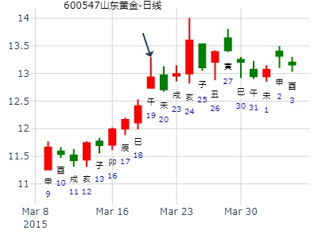
江西铜业近二周走势？
起卦方式：手动摇卦
公历时间：2017年3月22日15时37分
丁酉年 癸卯月 戊申日 庚申时
旬 空：辰巳 辰巳 (寅卯) 子丑
离宫：天水讼（游魂）
六神 伏 神 【本 卦】
朱雀 ▄▄▄▄▄ 子孙壬戌土
青龙 ▄▄▄▄▄ 妻财壬申金
玄武 ▄▄▄▄▄ 兄弟壬午火 世
白虎 官鬼己亥水 ▄▄ ▄▄ 兄弟戊午火
螣蛇 ▄▄▄▄▄ 子孙戊辰土
勾陈 ▄▄ ▄▄ 父母戊寅木 应

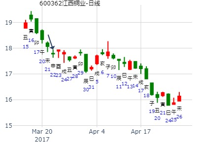
占事：测股市何时见底反弹（近两月）
起卦方式：电脑自动
公历时间：2008年3月27日12时47分 星期四
农历时间：戊子年二月二十午时
干支：戊子年 乙卯月 丙寅日 甲午时 (旬空：戌亥)
神煞：驿马—申 桃花—卯 日禄—巳 贵人—酉，亥
离宫：天水讼（游魂）
六神 伏 神 【本 卦】
青龙 ▅▅▅▅▅ 子孙壬戌土
玄武 ▅▅▅▅▅ 妻财壬申金
白虎 ▅▅▅▅▅ 兄弟壬午火 世
螣蛇 官鬼己亥水 ▅▅ ▅▅ 兄弟戊午火
勾陈 ▅▅▅▅▅ 子孙戊辰土
朱雀 ▅▅ ▅▅ 父母戊寅木 应
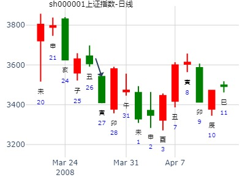
主题：百川股份在十天内的走势—4.1大涨
乙未 己卯 丁未 癸卯 (寅卯空)
(2015/04/01 06:45:00)
天水讼
青龙 子孙戌土 ／
玄武 妻财壬申 ／
白虎 兄弟午火 ／ 世
官鬼亥水：腾蛇 兄弟午火 ∥
勾陈 子孙辰土 ／
朱雀 父母寅木 ∥ 应
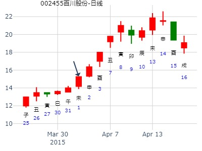
起卦方式：手动摇卦
占事： 000016至月底涨跌？当时价5.30元
公历时间：2011年4月19日7时20分
干支：辛卯年 壬辰月 甲辰日 旬空： 寅卯
神煞：驿马─寅 桃花─酉 日禄─寅 贵人─丑，未
离宫：天水讼（游魂）
六神 伏 神 【本 卦】
玄武 ▄▄▄▄▄ 子孙壬戌土
白虎 ▄▄▄▄▄ 妻财壬申金
螣蛇 ▄▄▄▄▄ 兄弟壬午火 世
勾陈 官鬼己亥水 ▄▄ ▄▄ 兄弟戊午火
朱雀 ▄▄▄▄▄ 子孙戊辰土
青龙 ▄▄ ▄▄ 父母戊寅木 应
参考： 讼静卦_600084_2011-04-24
两个相同的卦，旬空寅卯，日建分别为子、才。
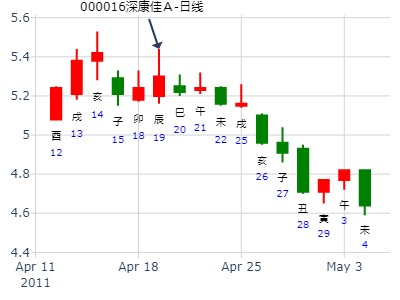
占事：000510金路集团哪个月值得拥有？
日期 : 2019-04-19
干支：己亥年 戊辰月 丙戌日 戊戌时（日空：午未） 燕山月
神煞：驿马－申 桃花－卯 日禄－巳 贵人－酉，亥
离宫：天水讼 (游魂)
六神 伏神 本 卦
青龙 子孙壬戌土 ▅▅▅▅▅
玄武 妻财壬申金 ▅▅▅▅▅
白虎 兄弟壬午火 ▅▅▅▅▅ 世
腾蛇 官鬼己亥水 兄弟戊午火 ▅▅ ▅▅
勾陈 子孙戊辰土 ▅▅▅▅▅
朱雀 父母戊寅木 ▅▅ ▅▅ 应
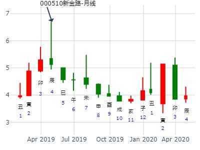
公历时间：2011年4月24日18时17分
占事：600084至月底涨跌？现价9.43元
干支：辛卯年 壬辰月 己酉日 癸酉时
旬空：午未 午未 寅卯 戌亥
神煞：驿马─亥 桃花─午 日禄─午 贵人─子，申
离宫：天水讼（游魂）
六神 伏 神 【本 卦】
勾陈 ▄▄▄▄▄ 子孙壬戌土
朱雀 ▄▄▄▄▄ 妻财壬申金
青龙 ▄▄▄▄▄ 兄弟壬午火 世
玄武 官鬼己亥水 ▄▄ ▄▄ 兄弟戊午火
白虎 ▄▄▄▄▄ 子孙戊辰土
螣蛇 ▄▄ ▄▄ 父母戊寅木 应
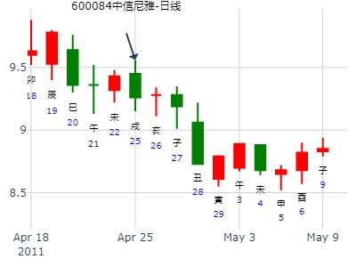
5月20日300491涨跌？
时间: 2021-05-19
干支: 辛丑年癸巳月丁卯日 (旬空: 戌亥 )
讼静卦
(游魂)
六神 伏神 本 卦
青龙 ▅▅▅▅▅ 子孙戌土
玄武 ▅▅▅▅▅ 妻财申金
白虎 ▅▅▅▅▅ 兄弟午火 世
腾蛇 官鬼亥水▅▅ ▅▅ 兄弟午火
勾陈 ▅▅▅▅▅ 子孙辰土
朱雀 ▅▅ ▅▅ 父母寅木 应
300428：
很奇怪，居然也得同一卦象，故判断与300491相同
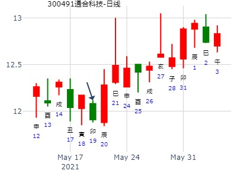
铜钱手摇卦601328今天交通银行 能涨吗？ (手工指定)
2015-06-09
干支：乙未年 壬午月 丙辰日 癸巳时 （日空：子丑）
离宫：天水讼 (游魂)
六神 伏神 本 卦
青龙 子孙壬戌土 ▅▅▅▅▅
玄武 妻财壬申金 ▅▅▅▅▅
白虎 兄弟壬午火 ▅▅▅▅▅ 世
腾蛇 官鬼己亥水 兄弟戊午火 ▅▅ ▅▅
勾陈 子孙戊辰土 ▅▅▅▅▅
朱雀 父母戊寅木 ▅▅ ▅▅ 应
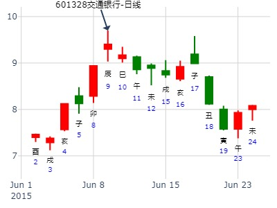
占事：002540亚太科技下周。
风生水起 占事: 002540 下周
起卦方式：手动摇卦 周易天地
公历时间：2014年7月19日9时41分
干支：甲午年 辛未月 辛卯日 癸巳时
旬空：辰巳 戌亥 午未 午未
离宫：天水讼（游魂）
六神 伏 神 【本 卦】
螣蛇 ▄▄▄▄▄ 子孙壬戌土
勾陈 ▄▄▄▄▄ 妻财壬申金
朱雀 ▄▄▄▄▄ 兄弟壬午火 世
青龙 官鬼己亥水 ▄▄ ▄▄ 兄弟戊午火
玄武 ▄▄▄▄▄ 子孙戊辰土
白虎 ▄▄ ▄▄ 父母戊寅木 应
此卦摇卦日兄弟是空，但周一就出空？
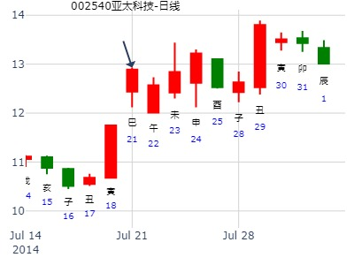
300491下周涨跌
公历时间：2021年8月13日16时12分
农历时间：辛丑年 七月初六日申时
干 支：辛丑年 丙申月 癸巳日 庚申时
旬 空：辰巳 辰巳 午未 子丑
神 煞：驿马─亥 桃花─午 日禄─子 贵人─巳，卯
离宫：天水讼（游魂）
六神 伏 神 【本 卦】
白虎 ▄▄▄▄▄ 子孙壬戌土
螣蛇 ▄▄▄▄▄ 妻财壬申金
勾陈 ▄▄▄▄▄ 兄弟壬午火 世
朱雀 官鬼己亥水 ▄▄ ▄▄ 兄弟戊午火
青龙 ▄▄▄▄▄ 子孙戊辰土
玄武 ▄▄ ▄▄ 父母戊寅木 应
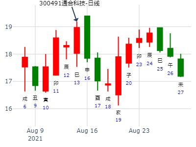
占事：丽珠集团最近三个月走势
公历起卦时间：2021年8月13日21时49分 (在线摇卦)
干支：辛丑年 丙申月 癸巳日 癸亥时 （日空：午未）
神煞：驿马－亥 桃花－午 日禄－子 贵人－卯，巳
离宫：天水讼 (游魂)
六神 伏神 本 卦
白虎 子孙壬戌土 ▅▅▅▅▅
螣蛇 妻财壬申金 ▅▅▅▅▅
勾陈 兄弟壬午火 ▅▅▅▅▅ 世
朱雀 官鬼己亥水 兄弟戊午火 ▅▅ ▅▅
青龙 子孙戊辰土 ▅▅▅▅▅
玄武 父母戊寅木 ▅▅ ▅▅ 应
兄弟持世，戌月入墓，
待亥子月兄弟变弱，看能否涨？
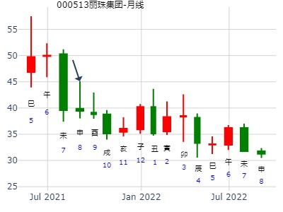
主题：600843明天走势
丁亥 戊申 壬午 己酉 (申酉空)
丁亥年七月初四(2007/08/16 17:56:10)
天水讼
白虎 子孙戌土 ／
腾蛇 妻财申金 ／
勾陈 兄弟午火 ／ 世官鬼亥水：
朱雀 兄弟午火 ∥
青龙 子孙辰土 ／
玄武 父母寅木 ∥ 应
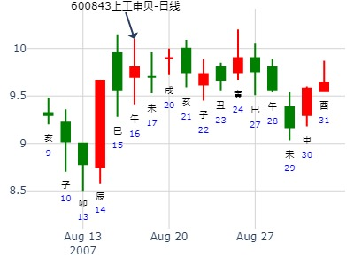
占事：8月20-24日大盘涨跌？
公历时间：2007年8月17日15时11分 星期五
干支：丁亥年 戊申月 癸未日 庚申时 (旬空：申酉)
神煞：驿马—巳 桃花—子 日禄—子 贵人—卯，巳
离宫：天水讼（游魂）
六神 伏 神 【本 卦】
白虎 ▅▅▅▅▅ 子孙壬戌土
螣蛇 ▅▅▅▅▅ 妻财壬申金
勾陈 ▅▅▅▅▅ 兄弟壬午火 世
朱雀 官鬼己亥水 ▅▅ ▅▅ 兄弟戊午火
青龙 ▅▅▅▅▅ 子孙戊辰土
玄武 ▅▅ ▅▅ 父母戊寅木 应
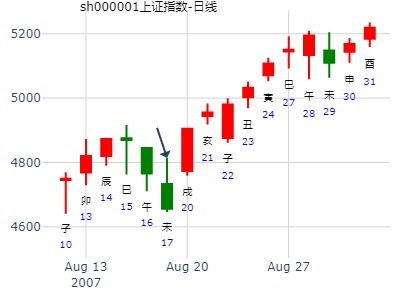
601698中国卫通，天水讼，大涨。噬嗑之剥
本月 全年 K线均可
占事: 持有的中国卫通财运金玉堂
时间: 2019-08-23
干支: 己亥年壬申月壬辰日 (旬空: 午未 )
讼静卦
(游魂)
六神 伏神 本 卦
白虎 ▅▅▅▅▅ 子孙戌土
腾蛇 ▅▅▅▅▅ 妻财申金
勾陈 ▅▅▅▅▅ 兄弟午火 世
朱雀 官鬼亥水▅▅ ▅▅ 兄弟午火
青龙 ▅▅▅▅▅ 子孙辰土
玄武 ▅▅ ▅▅ 父母寅木 应
经典： 兄弟持世旬空，财旺值月。子孙值日。
参考卦：
占事: 持有的中国卫通财运金玉堂
时间: 2019-08-28
干支: 己亥年壬申月丁酉日 (旬空: 辰巳 )
火雷噬嗑 山地剥
六神 伏神 本 卦 变 卦
青龙 ▅▅▅▅▅ 子孙巳火 ▅▅▅▅▅ 兄弟寅木
玄武 ▅▅ ▅▅ 妻财未土 世 ▅▅ ▅▅ 父母子水 世
白虎 ▅▅▅▅▅ 官鬼酉金 Ｏ→ ▅▅ ▅▅ 妻财戌土
腾蛇 ▅▅ ▅▅ 妻财辰土 ▅▅ ▅▅ 兄弟卯木
勾陈 ▅▅ ▅▅ 兄弟寅木 应 ▅▅ ▅▅ 子孙巳火 应
朱雀 ▅▅▅▅▅ 父母子水 Ｏ→ ▅▅ ▅▅ 妻财未土
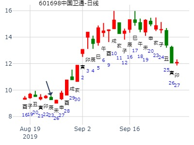
银行ETF代替 手摇银行板块一周走势
2020-09-06
干支：庚子年 甲申月 壬子日 辛亥时 (卦身：卯)
主 天水讼(离宫-游魂) [空亡:寅、卯]
白虎 ▅▅▅▅▅ 子孙壬戌土
螣蛇 ▅▅▅▅▅ 妻财壬申金
勾陈 ▅▅▅▅▅ 兄弟壬午火 世
朱雀 官鬼己亥水 ▅▅ ▅▅ 兄弟戊午火
青龙 ▅▅▅▅▅ 子孙戊辰土
玄武 ▅▅ ▅▅ 父母戊寅木 应
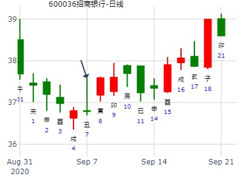
占事：600789这个月的走势
公历起卦时间：2016年9月11日22时49分 (手工指定)
干支：丙申年 丁酉月 丙申日 己亥时 （日空：辰巳）
神煞：驿马－寅 桃花－酉 日禄－巳 贵人－酉，亥
离宫：天水讼 (游魂)
六神 伏神 本 卦
青龙 子孙壬戌土 ▅▅▅▅▅
玄武 妻财壬申金 ▅▅▅▅▅
白虎 兄弟壬午火 ▅▅▅▅▅ 世
腾蛇 官鬼己亥水 兄弟戊午火 ▅▅ ▅▅
勾陈 子孙戊辰土 ▅▅▅▅▅
朱雀 父母戊寅木 ▅▅ ▅▅ 应
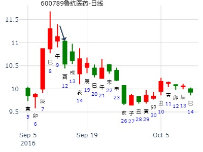
占事：一周大盘
公历起卦时间：2019年10月28日8时39分 (手工指定)
干支：己亥年 甲戌月 戊戌日 丙辰时 （日空：辰巳）
神煞：驿马－申 桃花－卯 日禄－巳 贵人－丑，未
离宫：天水讼 (游魂)
六神 伏神 本 卦
朱雀 子孙壬戌土 ▅▅▅▅▅
青龙 妻财壬申金 ▅▅▅▅▅
玄武 兄弟壬午火 ▅▅▅▅▅ 世
白虎 官鬼己亥水 兄弟戊午火 ▅▅ ▅▅
腾蛇 子孙戊辰土 ▅▅▅▅▅
勾陈 父母戊寅木 ▅▅ ▅▅ 应
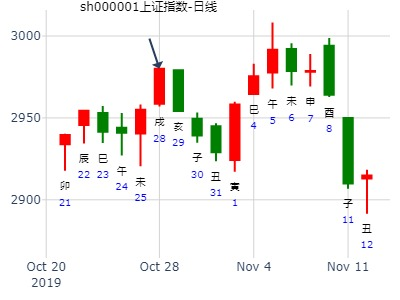
占事：2022年12月大盘涨跌？金眼牛
公历起卦时间：2022年11月30日15时52分 (手工指定)
干支：壬寅年 辛亥月 丁亥日 戊申时 （日空：午未）
神煞：驿马－巳 桃花－子 日禄－午 贵人－酉，亥
离宫：天水讼 (游魂)
六神 伏神 本 卦
青龙 子孙壬戌土 ▅▅▅▅▅
玄武 妻财壬申金 ▅▅▅▅▅
白虎 兄弟壬午火 ▅▅▅▅▅ 世
螣蛇 官鬼己亥水 兄弟戊午火 ▅▅ ▅▅
勾陈 子孙戊辰土 ▅▅▅▅▅
朱雀 父母戊寅木 ▅▅ ▅▅ 应
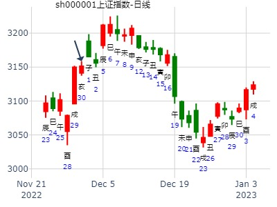
占事: 上证未来二周
时间: 2021-12-8
干支: 辛丑年庚子月庚寅日癸未时 (旬空: 午未 )
讼静卦
(游魂)
六神 伏神 本 卦
腾蛇 ▅▅▅▅▅ 子孙戌土
勾陈 ▅▅▅▅▅ 妻财申金
朱雀 ▅▅▅▅▅ 兄弟午火 世
青龙 官鬼亥水▅▅ ▅▅ 兄弟午火
玄武 ▅▅▅▅▅ 子孙辰土
白虎 ▅▅ ▅▅ 父母寅木 应
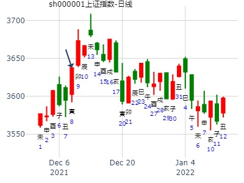